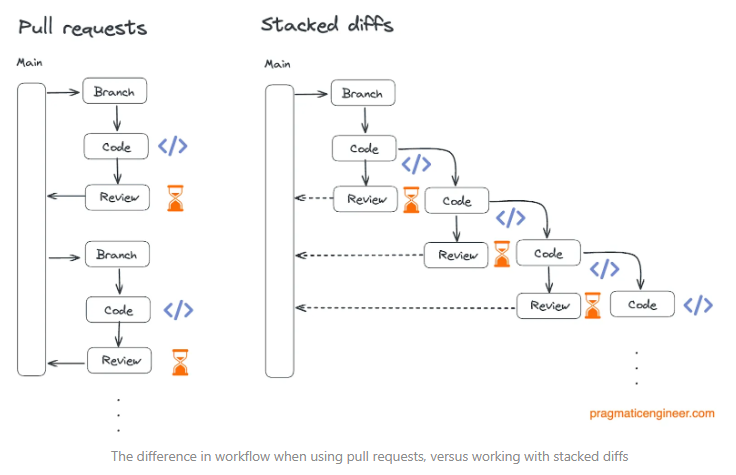
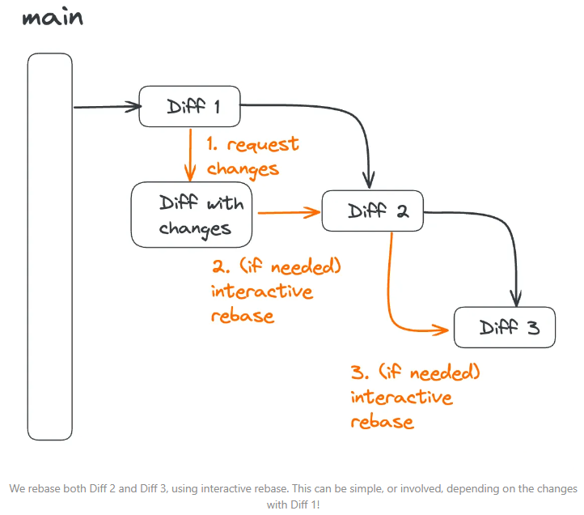

Stacked Diffs / Stacked PR
For larger features you often have to wait long for PR reviews. Stacked diffs address this issue to reduce waiting time for PR reviews.
The main idea behind "stacked diffs" is a development workflow that involves breaking down large features into smaller, manageable units called "diffs" or "change sets" and stacking them on top of each other.
This is mainly achieved by creating small, self-contained changes that builds upon the change before it. This contrasts with the traditional model where large changes are reviewed in a single, monolithic pull request.

The main difficulty with this approach arises when changes in the parent PR occur (e.g. PR feedback). Those changes often produce merge conflicts which propagate through all child branches. This issue can be mitigated with interactive rebase.
Do an interactive rebase on main but remove all commits from the first Diff (e.g. Diff 1)

Example:
git checkout main
git pull
git checkout feature-b
git rebase -i main
Without rebasing:
%%{init: {'theme': 'dark'} }%%
gitGraph LR:
checkout main
commit id:"init"
branch feature-a
checkout feature-a
commit id:"feat: Feature A"
commit id:"change 1a"
branch feature-b
checkout feature-b
commit id:"feat: Feature B"
commit id:"change 1b"
checkout main
commit id:"change 1"
checkout feature-a
merge main id:"merge main->a 1"
checkout feature-b
commit id:"change 2b"
merge feature-a id:"merge a->b 1"
checkout feature-a
commit id:"change 2a"
checkout feature-b
merge feature-a id:"merge a->b 2"
checkout main
merge feature-a id:"merge a->main 1"
commit id:"change 2"
checkout feature-b
commit id:"change 3b"
merge main id:"merge main->b 1"
checkout main
merge feature-b id:"merge b->main 1"
With correct
rebasing of feature-b onto feature-a we should have a cleaner history and no "merge a->b" commits.%%{init: {'theme': 'dark'} }%%
gitGraph LR:
checkout main
commit id:"init"
branch feature-a
checkout feature-a
commit id:"feat: Feature A"
commit id:"change 1a"
checkout main
commit id:"change 1"
checkout feature-a
merge main id:"merge main->a 1"
commit id:"change 2a"
branch feature-b
checkout feature-b
commit id:"feat: Feature B"
commit id:"change 1b"
commit id:"change 2b"
commit id:"change 3b"
checkout main
merge feature-a id:"merge a->main 1"
commit id:"change 2"
checkout feature-b
merge main id:"merge main->b 1"
checkout main
merge feature-b id:"merge b->main 1"
With
interactive rebase of main we should get rid of the crosses (❌) :%%{init: {'theme': 'dark'} }%%
gitGraph LR:
checkout main
commit id:"merge a->main 1"
commit id:"change 2"
branch feature-b
checkout feature-b
commit type:REVERSE id:"feat: Feature A"
commit type:REVERSE id:"change 1a"
commit type:REVERSE id:"merge main->a 1"
commit type:REVERSE id:"change 2a"
commit id:"feat: Feature B"
commit id:"change 1b"
commit id:"change 2b"
commit id:"change 3b"
commit id:"merge main->b 1"
checkout main
merge feature-b id:"merge b->main 1"
Tools to support stacked diffs
- Phabricator
- Graphite
Gitflow
The key premise of Gitflow is that each commit to your primary branch (main) represents a release and a secondary branch, develop, is used for ongoing development. New features are built on feature branches and then reviewed and merged into the develop branch. When changes are ready to be released, a release branch is created, and when the release is complete that branch is merged into the primary branch.
Gitflow is most effective for teams that follow an extensive release management process that prevents continuous deployment, particularly if multiple stakeholders need to approve a release before it goes live. The release branch acts as a gatekeeper.
It however no longer alignes with the modern, continuous delivery based development.
Trunk Based Development (TBD)
In trunk based development, developers merge small, frequent updates to the primary or "trunk" branch. Idiomatic trunk based development has developers committing directly to the primary branch, however it is common for teams to use short lived feature branches to support code reviews and automated checks prior to merging, this variant can sometimes be referred to as scaled trunk based development or feature branch workflow. Releases are done directly from the primary branch and since you are already deploying on all commits to the primary branch, fixes to deployed code is treated no different from any other code change.
This workflow is ideal for teams that utilise continuous deployment